7 ChatGPT, MariTalk e outros agentes de conversação
Um retrato de 2023, com retoques em 2026
Embora este capítulo tenha sido escrito em 2023 com a intenção de ser melhorado e aprofundado no ano seguinte, isto nunca foi feito. Porém, e por curiosidade, repetimos os prompts aos agentes em 2025, e os resultados estão bem melhores, sobretudo na Maritalk. Ainda em 2025, os resultados sobre o livro A Bolsa Amarela continuavam errados; em 2026, finalmente, o ChatGPT forneceu a resposta correta.
7.1 Introdução
ChatGPT1 e Maritalk2 (e similares, como Bard3, Vicuna4, Claude5, entre tantos outros) são exemplos de aplicações de agentes de conversação (chatbots) baseados em modelos de linguagem gerativos (ou generativos). Mas o que significa isso?6
Alguns autores, como Jurafsky e Martin (Jurafsky; Martin, 2023), usam o termo “agente de conversação” para definir qualquer sistema de diálogo que se comunique com usuários usando a linguagem humana e os dividem em duas classes: agentes orientados a tarefas, em que o diálogo é para resolver um problema específico, como agendar uma viagem ou resolver um problema bancário, enquanto chatbots seriam agentes de conversação que tentam simular diálogos humanos, mais voltados para entretenimento. Ferramentas como ChatGPT se enquadram mais no segundo caso, entretanto também podem ser embutidos em outras ferramentas aumentadas para atuar como no primeiro caso. Neste capítulo, os termos “chatbots” e “agentes de conversação” serão usados de forma intercambiável.
Agentes de conversação não são novidade – ELIZA, criada em 1966 pelo cientista da computação Joseph Weizenbaum, era um agente de conversação que replicava o comportamento de um psicoterapeuta. ELIZA era simples, baseada em templates (padrões de conversa pré-construídos), mas conseguia manter longas conversas buscando por determinadas palavras-chave nas falas (escritas por texto) de uma pessoa. Se uma palavra-chave fosse encontrada, uma regra seria aplicada para transformar sua entrada e criar a resposta. Na Figura 7.1, transcrevemos quatro interações com a ELIZA (retiradas de (Jackson; Moulinier, 2002)).
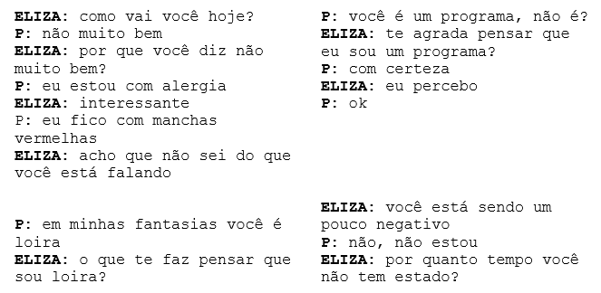
Nos trechos, temos exemplos de padrões pré-fabricados que retomam elementos da pessoa que fala, como “Por que você diz [...]”, “Te agrada pensar que [...]”, “O que te faz pensar que [...]”, e “Por quanto tempo você não tem [...]”. Vemos também que, no último trecho, esta retomada falha, pois “por quanto tempo você não tem estado” é algo que não faz sentido, embora seja gramaticalmente correto. Se ao invés de “não, não estou”, a pessoa tivesse dito “não, não comi”, a resposta de ELIZA seria “Por quanto tempo você não tem comido?”, e a conversa poderia continuar. ELIZA também foi programada para fazer uso de palavras genéricas, como “interessante”, para quando não há pistas sobre como continuar a conversa. A palavra “alergia” não é elemento capaz de evocar novas interações, e o mesmo acontece com “manchas vermelhas”.
De 1966 para cá muita coisa mudou, e podemos começar perguntando ao ChatGPT o que é um GPT, que é parte importante do seu nome. O trecho abaixo foi traduzido de uma interação que não é nossa, feita originalmente em inglês – mas os grifos são nossos7.
Quadro 7.1 Exemplo de interação com o ChatGPT, em 2023
O que podemos tirar daí?
Como dissemos, ChatGPT e similares são agentes de conversação baseados em modelos de linguagem gerativos. Como visto no Capítulo Modelos de linguagem, este nome se refere a algoritmos que são bons em encadear palavras de maneira fluente, mas são baseados em previsões e probabilidade. São geradores de texto otimizados para parecerem plausíveis. Outro ponto importante mencionado na explicação fornecida pela própria ferramenta é que não há criatividade propriamente, apenas uma reembalagem do que já foi dito. Por fim, vemos que não há qualquer garantia de que os textos gerados contenham informação correta (e nem há responsabilidade sobre isso).
Uma consequência da forma pela qual essas ferramentas são feitas (baseadas em previsão) é que nem sempre a previsão está condizente com a realidade, o que tem sido chamado de alucinação. Este fenômeno acontece quando um modelo de linguagem gera um texto que pode estar correto gramaticalmente, ter fluência e alguma coerência semântica, mas que não reflete a realidade e, portanto, não faz sentido (Ji et al., 2023). O termo é emprestado da psicologia, que o define como “uma percepção, experimentada por uma pessoa acordada, na ausência de um estímulo apropriado do mundo extracorpóreo” (Blom, 2010), ou seja, algo que parece real, mas não é.
Embora algumas destas ferramentas possam ser aumentadas com técnicas de recuperação de informação (ver Capítulo Geração Aumentada por Recuperação (RAG)) , este não é o caso dos modelos mais básicos atuais, sem acesso externo. Por outro lado, chatbots comerciais e os embutidos nos navegadores são estendidos com mecanismos de busca e ferramentas de recuperação de informação externa. De todo modo, a maioria dessas ferramentas não funciona da mesma forma que uma máquina de busca ou um banco de dados, ou mesmo um repositório de perguntas e respostas. Entretanto, as respostas retornadas por elas mostram fluência e podem fazer algum sentido – embora não possamos desconsiderar o fenômeno cognitivo da apofenia (Fyfe et al., 2008) 8, que diz respeito à identificação de padrões ou associações em conjuntos de dados aleatórios9. E este é o perigo: as alucinações, não à toa, frequentemente não parecem alucinações, e soam como verdades. Já vimos, por exemplo, que, ao pedir uma lista de referências bibliográficas sobre um determinado assunto, são geradas referências completas, com indicação de autoria, título, revista, volume, ano, que simplesmente não existem. Isto acontece porque os textos são gerados levando em conta a probabilidade daquilo ser uma resposta correta, isto é, as respostas são elaboradas de maneira a se parecerem o máximo possível com uma resposta correta. Pode ser difícil distinguir as respostas – ou, mais precisamente, as sequências de palavras – que estão ancoradas na realidade daquelas que apenas parecem estar ancoradas na realidade. Assim, uma das limitações deste tipo de ferramenta é a incapacidade de dizer “não sei”.
O desenvolvimento de maneiras de evitar as alucinações é uma das preocupações desde 2023. Algumas estratégias têm sido discutidas livremente e também investigadas na academia e na indústria. Do ponto de vista do usuário final, aquela pessoa que vai abrir o ChatGPT no navegador e interagir com ele por meio de textos, uma das alternativas é a engenharia de prompts10. Neste caso, o usuário pode tentar continuar a conversa com a ferramenta, calibrando e alinhando as respostas anteriores com novas perguntas. Outra possibilidade é usar a ferramenta por meio da sua API (Application Programming Interface), ou seja, quando o ChatGPT é invocado e controlado por meio de código, ao invés de ser usado diretamente no navegador. Neste caso, é possível controlar o parâmetro de temperatura, usado para calibrar a distribuição de probabilidade, de modo que o chatbot se atenha mais ao que foi aprendido anteriormente, ou gere respostas um pouco menos prováveis, ou mais “criativas”. Outra possibilidade é acoplar bases de conhecimento externas ao processo de geração de texto (Lewis et al., 2020) ou interagir com o chatbot por meio de perguntas que demandem alguma tentativa de simulação de raciocínio, ou embutir o modelo de habilidades de explicação das suas respostas, um processo chamado de chain-of-thought (Kojima et al., 2022). Entretanto, até agora, nenhuma das opções mencionadas conseguiu remover por completo as alucinações dos chatbots baseados em modelos de linguagem (Zhang et al., 2025).
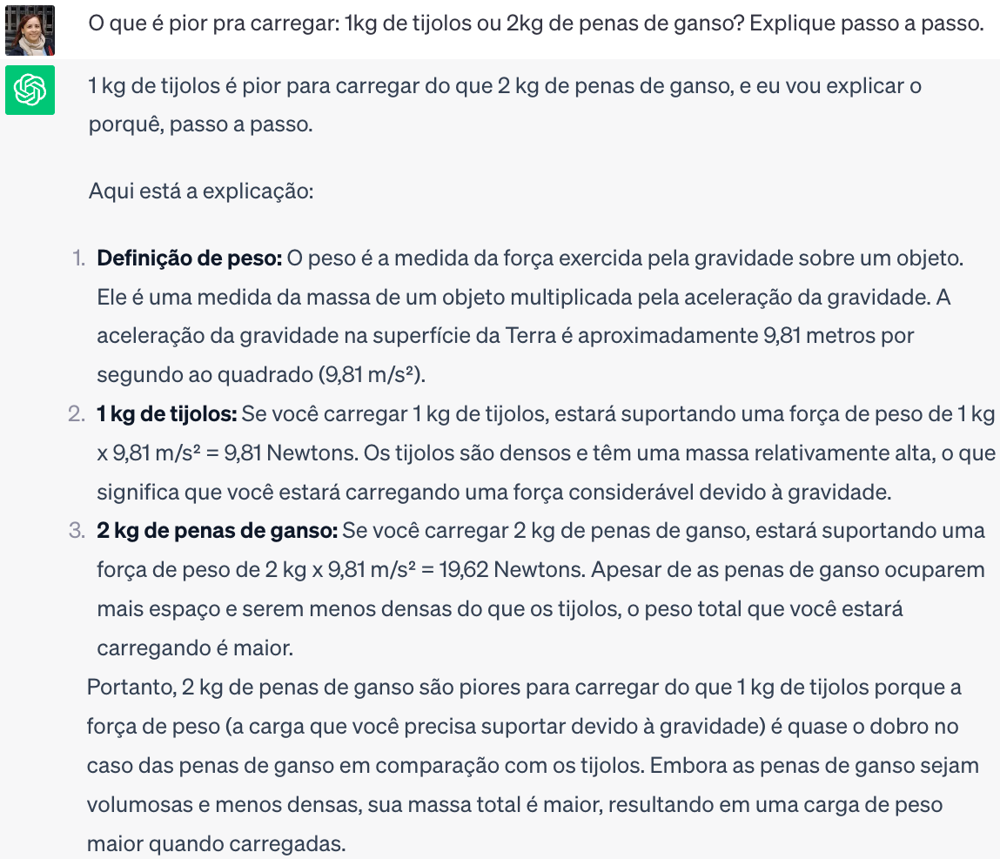
No contexto empresarial, Hannigan et al. (2024) sugerem levar em conta duas dimensões para orientar o uso de chatbots com o objetivo de mitigar a utilização humana de conteúdo falso gerado por LLMs (que os autores chamam de “botshit”):
Importância da veracidade das respostas (qual é a importância da veracidade da resposta do chatbot para a tarefa?)
Verificabilidade da veracidade das respostas (quão fácil é verificar a veracidade da resposta do chatbot?)
Quanto à importância da veracidade, diferentes tipos de trabalho podem ter expectativas distintas. Quando a gravidade do risco de usar conteúdo de chatbot é muito alta (em situações com baixa ou nenhuma tolerância a falhas, como manutenção de equipamentos, bem-estar de pacientes e segurança dos funcionários) a veracidade da resposta do chatbot é crucial. Ainda conforme Hannigan et al. (2024), nesses casos os riscos relacionados ao “botshit” refletem o conceito de responsabilização algorítmica nas organizações. Por outro lado, quando a gravidade do risco é baixa, como na busca por ideias ou sugestões (“brainstorming” ou “botstorming”), a veracidade da resposta do chatbot é irrelevante.
Quanto ao segundo ponto, Hannigan et al. (2024) comparam o conteúdo ilusório fácil de verificar a “um trem desgovernado que pode ser ouvido a quilômetros de distância”. Nesse caso, a escolha pela utilização de um chatbot deve levar em consideração o quão simples ou complexo, barato ou caro, rápido ou lento é revisar, descobrir e evitar que o conteúdo equivocado de uma resposta do chatbot seja usado e transformado em “botshit”. As respostas serão fáceis de verificar se existir um conjunto relativamente estável e acessível de afirmações verdadeiras em torno do conteúdo da resposta. Por exemplo, um prompt solicitando a definição de uma palavra pode ser facilmente verificável usando um dicionário.
7.2 Jogos de Linguagem
Existem algumas maneiras de entender “linguagem”, e uma delas defende que aquilo que chamamos de linguagem é um conjunto de práticas relacionadas, assim como os jogos, que incluem diferentes práticas/atividades, apesar de serem chamados “jogos” (jogos de cartas, jogos de bola, de tabuleiro, de esconder, de adivinhação, paciência (que se joga sozinho), frescobol (em que não há vencedor) etc). No livro Investigações Filosóficas (1953), o filósofo da linguagem L. Wittgenstein lista alguns exemplos de jogos de linguagem, e os reconhecemos como “tarefas do PLN”:
- descrever um objeto,
- produzir um objeto segundo uma descrição (desenho),
- contar uma anedota,
- traduzir um texto,
- inventar uma história,
- dar um comando, e agir segundo comandos,
- relatar um acontecimento,
- conjecturar sobre o acontecimento,
- expor uma hipótese e prová-la,
- resolver um exemplo de cálculo aplicado,
- desenhar um objeto a partir de uma instrução verbal,
- apresentar resultados de um experimento por meio de tabelas e diagramas,
- pedir, agradecer, maldizer, saudar, orar.
Podemos juntar à lista mais alguns jogos “jogados no PLN”: - encontrar informações em um texto para responder certas perguntas, - analisar sintaticamente uma frase, - dar a definição de uma palavra, - produzir inferências, - explicar suas próprias decisões, - prever a próxima palavra em uma frase.
Desse ângulo, podemos imaginar que os modelos de linguagem de que dispomos e que servem de base para agentes de conversação, como ChatGPT e Maritalk, são muito bons em algumas dessas práticas – ou “jogos de linguagem” –, mas não em todas. Ou seja, são modelos que jogam mais ou menos bem alguns jogos, como “inventar uma história”, “resumir”, “escrever um email”, “traduzir”, “prever a próxima palavra” etc., mas não jogam tão bem outros, como “fazer cálculos” ou “fornecer explicações”.
Este desempenho tem a ver com a forma como os modelos foram construídos, baseada em previsão: nem todos os jogos de linguagem, ou nem todas as atividades linguísticas em que participamos, se resumem a um jogo de previsões, embora um bom desempenho no jogo das previsões leve a um bom resultado em uma série de outros jogos. Do mesmo modo, correr bem ajuda a jogar pique-bandeira, polícia e ladrão, pique-esconde, futebol, e uma série de outros jogos. Mas não necessariamente ajuda a jogar paciência ou jogo da velha. Agentes de conversação se beneficiam especialmente de bom desempenho na previsão de palavras.
Uma das razões pelas quais estes agentes de conversação se tornaram tão populares é que, com eles, qualquer pessoa pode interagir com as máquinas usando sua própria língua11, e não em uma linguagem de programação. Com isso, qualquer pessoa pode pedir que máquinas executem certas tarefas, que podem ir desde a criação de um programa de computador (códigos) até sugestões de receitas a partir de uma lista de ingredientes que temos na geladeira. Mas não há garantia de que funcionem, ou de que a receita ficará boa.
Embora as saídas dos agentes de conversação possam muitas vezes nos surpreender, ainda é difícil afirmar que eles resolvem tarefas de PLN muito bem, ou que o desempenho deles supera o desempenho humano em alguma tarefa. A geração de textos, tarefa-base de tais agentes, ainda é de difícil avaliação, tanto automática como humana. As métricas automáticas, como ROUGE12 (Lin, 2004), BLEU13 (Papineni et al., 2002), BERTscore14 (Zhang et al., 2020), METEOR15 (Banerjee; Lavie, 2005), entre outras, ainda apresentam diversas limitações (Sai et al., 2023). Especialistas humanos, por sua vez, podem conseguir avaliar muito bem as respostas, mas esta ainda é uma tarefa cansativa e propensa a ruídos. Por outro lado, não é trivial criar conjuntos de dados que explorem todas as características que gostaríamos de avaliar em um sistema de geração de textos, o que inclui não apenas aspectos gramaticais e semânticos, mas também criatividade, fluência, interesse e prazer despertado no leitor, dentre tantos outros.
Nas seções seguintes, mostraremos tarefas (ou jogos) que os agentes parecem jogar bem e tarefas que os agentes jogam mal. Os exemplos serão obtidos em sua maioria do ChatGPT16, o agente de conversação mais popular até o momento. Também incluímos, em alguns casos, exemplos de outros dois agentes: a MariTalk17, uma agente de conversação construída a partir do modelo de linguagem Sabiá (Pires et al., 2023), treinado de forma continuada a partir do GPT com textos em português.
Além dos agentes de conversação cujo objetivo principal é a interação por meio de diálogo, também existem inúmeras ferramentas baseadas em modelos de linguagem para propósito específico, como auxiliar em revisões da literatura18, auxiliar na escrita de código19, escrita de e-mails20, revisão de texto21, entre outras. Não trataremos destes casos aqui.
7.3 Jogos que os agentes parecem jogar bem
7.3.1 Sumarização
Gerar resumos é uma tarefa em PLN chamada de sumarização textual, que consiste em gerar um texto mais curto que o original e que ainda seja fluente e fiel ao texto-fonte. A sumarização pode ser abstrativa ou extrativa. A sumarização abstrativa consiste em gerar um resumo com as próprias palavras do escritor, enquanto a sumarização extrativa consiste em extrair sentenças inteiras do texto que, quando juntas, formem um resumo. Os chatbots têm mostrado em vários exemplos que conseguem resumir bem os textos. Entretanto, se o texto for muito longo, a maioria dos agentes mais populares esbarra em um problema computacional: ainda é difícil para modelos baseados em Transformers (Bertsch et al., 2023; Vaswani et al., 2017)22 receber como entrada textos muito longos (veja mais no Capítulo Modelos de linguagem). Por exemplo, ao pedirmos que o ChatGPT resumisse o texto sobre Estoicismo23 com o prompt
- P. Resuma o texto que segue, de forma extrativa, em até 200 palavras
a resposta era que o texto era muito longo. Entretanto, ao usar o mesmo prompt, copiando e colando a página da Wikipedia sobre Estoicismo24, obtivemos a resposta na Figura 7.3. Embora seja de fato um resumo extrativo, podemos observar que a primeira parte do texto foi a que mais recebeu atenção. Outro fator que pode ter contribuído para a preferência ao início do texto é o pedido que o texto final esteja contido em 200 palavras, uma motivação para que a resposta não ficasse enorme25.
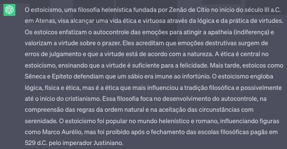
7.3.2 Criação de história
Pedimos ao ChatGPT e a MariTalk para escrever uma história da Carochinha26, com o seguinte prompt
- P. Crie uma história da Carochinha original.
As Figuras 7.4 e 7.5 trazem a saída para cada chatbot, respectivamente.
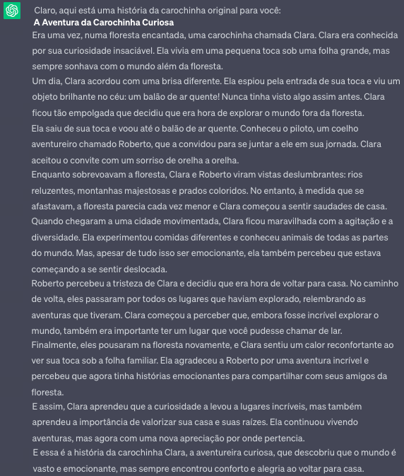
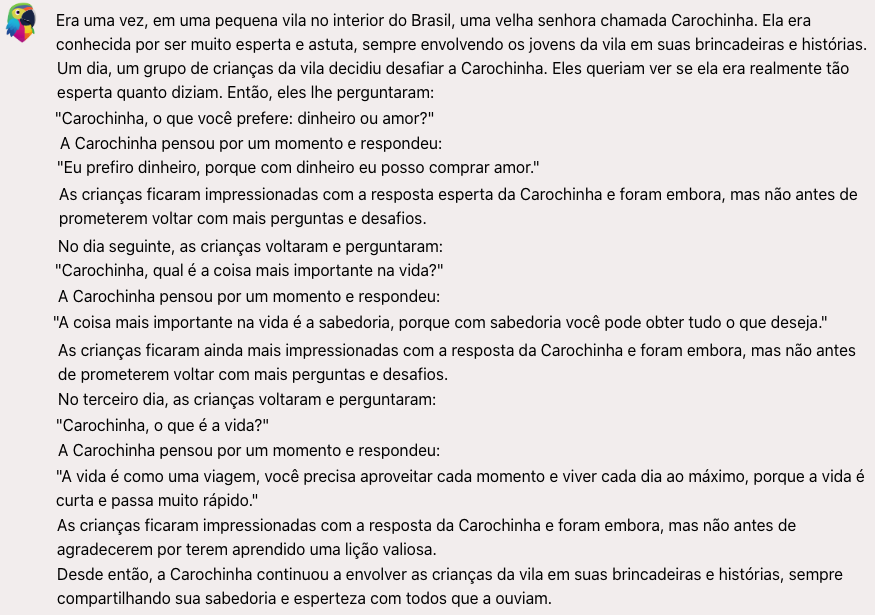
Podemos observar que as histórias têm coerência e parecem mesmo com histórias populares da carochinha, mantendo o nível para o público infantil. Mas também podemos observar que as histórias trazem temas repetitivos (ou seja, falta criatividade ou acontecimentos inesperados e surpreendentes).
Por isso, alteramos o prompt um pouco, acrescentando um pedido para que a história fosse surpreendente:
- P. Escreva uma história da Carochinha surpreendente.
A história que segue no Quadro 7.2 contém mais elementos que as anteriores, mas não chamaríamos de “surpreendente”. E, como estamos aqui fazendo uma avaliação, é curioso que logo a primeira frase apresente um erro gramatical: “Era uma vez (...) vivia uma carochinha chamada Clara.” Guiada pelo padrão “Era uma vez”, típico desse tipo de texto, a ferramenta não percebeu que não basta a fórmula “Era uma vez”, mas que era uma vez “alguma coisa”, e não “era uma vez” uma ação. Ou seja, o correto seria “Era uma vez, numa floresta, uma menina chamada...” e não “Era uma vez, numa floresta, vivia uma menina chamada...” De um ponto de vista narrativo, parece haver um salto no início do 5o parágrafo: se tudo ia bem, e Clara aprendia na jornada, por que ela estava prestes a desistir? Ainda assim, é uma história interessante, que poderia ser contada para uma criança.
Quadro 7.2 História da Carochinha devolvida pelo ChatGPT, em 2023, como resposta ao prompt: “Escreva uma história da Carochinha surpreendente”
Em 2025 repetimos o prompt com o ChatGPT (Figura 7.6) e a Maritalk (Figura 7.7), e ainda que “surpreendente” seja de difícil avaliação, nos parece que a geração atendeu melhor ao comando, com personagens inusitados como um esquilo cartógrafo e um sapo inventor.
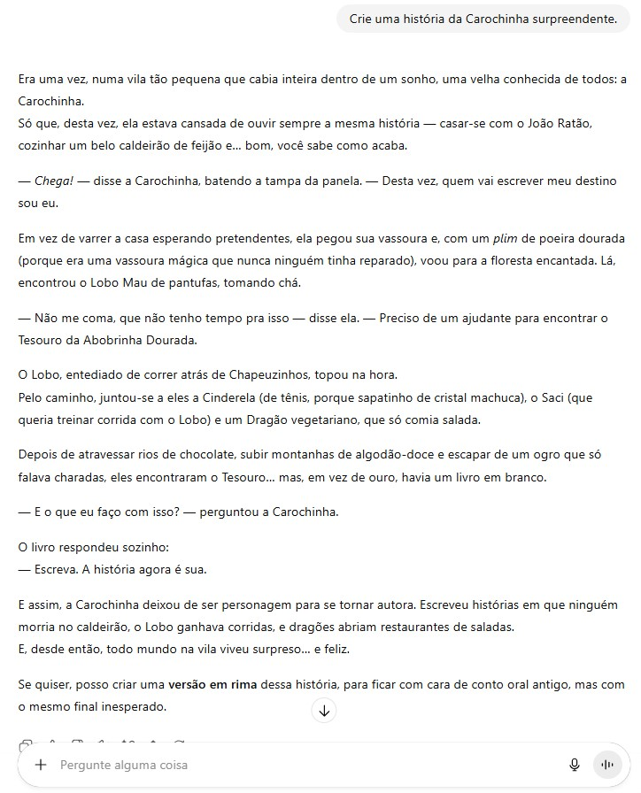
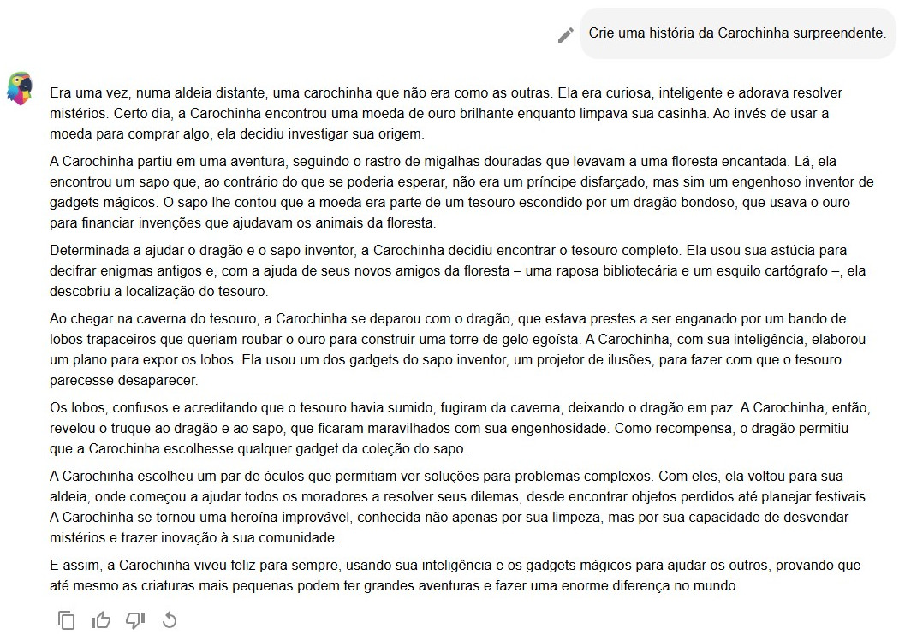
7.3.3 Tradução automática
Outra tarefa bem desempenhada pelos chatbots é a tradução automática, ao menos para pares de línguas que tenham muitos recursos disponíveis para treinamento. Abordar línguas com poucos recursos de avaliação e treinamento é uma tarefa de interesse da comunidade de PLN, mas também um desafio para o treinamento dos modelos de linguagem. Os chatbots até devolvem alguma resposta para línguas com poucos recursos/ mais raras, mas seria difícil avaliarmos a correção e fluência da tradução. É bom relembrar que a tradução é considerada como uma das habilidades emergentes dos modelos de linguagem de larga escala, ou seja, é uma tarefa com a qual eles conseguem lidar mesmo que não tenham sido explicitamente treinados.
A Figura 7.8 apresenta a tradução devolvida pelo ChatGPT para as quatro primeiras estrofes da canção “O Que é, o Que é?” e o prompt “Traduza o seguinte texto para inglês e para francês:”. Tanto a tradução para inglês como para francês estão corretas. Mas esta não é uma tradução muito difícil de ser feita, as palavras contidas são simples e a Internet pode estar repleta de tentativas como essa.
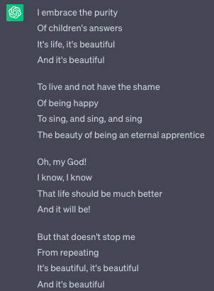
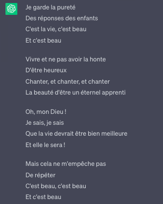
Para testar alguns casos em que os chatbots poderiam ter problemas na tradução, escolhemos algumas sentenças do copus DELA27, descritas no artigo (Castilho et al., 2021) como problemáticas quando traduzidas fora do contexto. As Figuras 7.9 e 7.10 mostram as traduções das sentenças pelos chatbots ChatGPT e MariTalk, respectivamente. Propositalmente, as traduções foram feitas para sentenças isoladas, também fora de contexto, para observamos o que estes dois agentes fariam em casos de ambiguidade ou outros problemas listados no artigo.
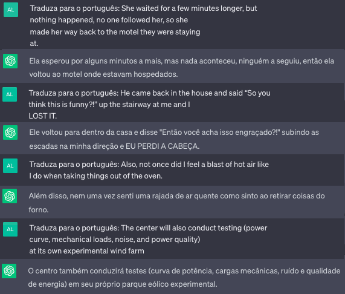
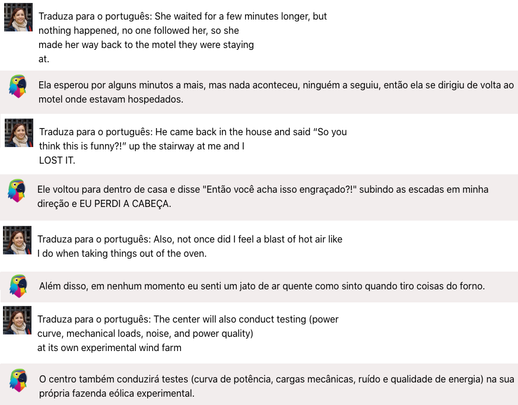
No primeiro caso, um exemplo do artigo referente à falta de flexão de gênero na língua inglesa, ambos os chatbots assumiram o default para masculino (“hospedados”), embora a resposta da MariTalk não inclua o pronome “eles”, o que é comum na língua portuguesa, mas não é correto na língua inglesa. Este não é um erro, já que ambas as flexões claramente estariam corretas com apenas a sentença de entrada. Mas, em caso de dúvida, a resposta poderia alternar entre os gêneros feminino e masculino.
No segundo exemplo, embora a expressão “I LOST IT” também possa ser interpretada como alguém perdendo alguma coisa, ambos os chatbots traduziram como “Eu perdi a cabeça”, querendo dizer que a pessoa perdeu o controle. O contexto da sentença direciona para esta tradução, corretamente. Os chatbots também não tiveram problema para resolver a elipse da próxima sentença. No último caso, a tradução do ChatGPT para “parque eólico” é mais específica de domínio do que a tradução da MariTalk, para uma palavra mais genérica, conforme discutido no artigo (Castilho et al., 2021) no que se refere a problemas associados à terminologia.
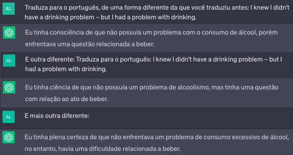
Um exemplo interessante é a tradução da seguinte sentença em inglês para o português:
- I knew I didn’t have a drinking problem – but I had a problem with drinking.
A MariTalk traduziu para “Eu sabia que eu não tinha um problema de beber – mas eu tinha um problema com beber.”, enquanto o ChatGPT retornou “Eu sabia que não tinha um problema com álcool – mas tinha um problema com o consumo de bebidas.”. Uma tradução mais coerente seria “Eu sabia que meu problema não era alcoolismo; era com a bebida.”28, o que não foi retornado por nenhum desses dois agentes na primeira iteração. Nós tentamos outras traduções em algumas outras iterações com o ChatGPT e o resultado pode ser visto na Figura 7.11. Podemos perceber que as próximas traduções estão indo em uma direção semântica mais similar ao esperado.
7.3.4 Escrever e-mails
A última tarefa que comentaremos aqui é a escrita de e-mails, que, com a ajuda dos chatbots, pode economizar um bom tempo. Entretanto, é sempre bom reforçar que dada a natureza probabilística da geração dos textos pelos chatbots, é essencial revisar o e-mail antes de enviá-lo, ainda mais em situações formais ou de comunicação com pessoas fora do círculo de relacionamento. A Figura 7.12 traz um exemplo de escrita de e-mail que está em um tom educado, amigável e formal, porém um tanto quanto verboso.
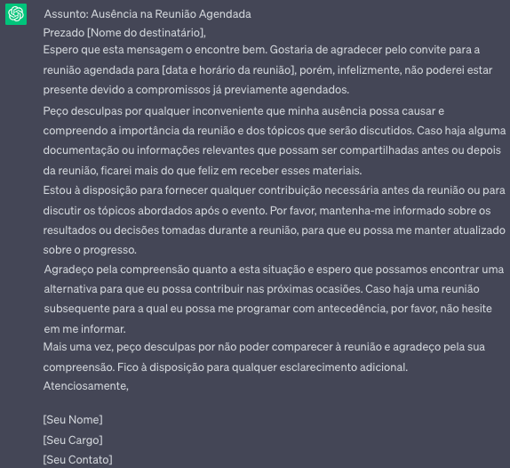
Ele também pode ajudar a aliviar ou recrudescer o tom de uma mensagem, como mostramos na Figura 7.13. É um tom realmente ríspido, porém incisivo e direto ao ponto da insatisfação. Mas ao menos a pessoa não teria que ficar o dia inteiro pensando em como responder em uma situação indesejada.
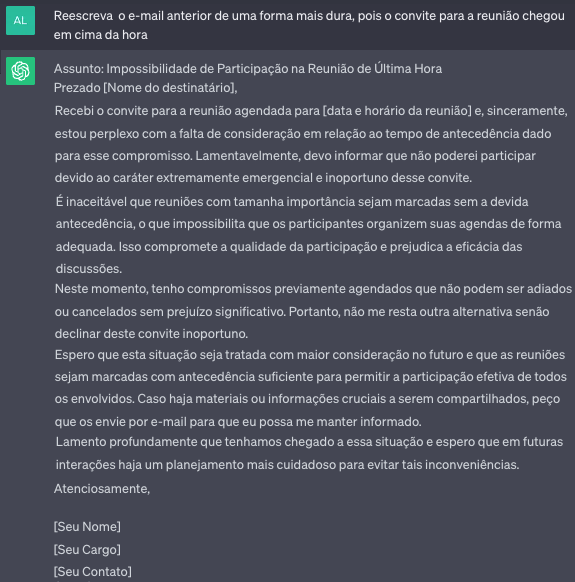
7.4 Jogos que os agentes melhoraram
7.4.1 Simplificação textual
A tarefa (ou jogo) de simplificação textual envolve tornar textos mais simples e acessíveis. Como é possível imaginar, não é uma atividade óbvia, uma vez que o que é simples para uma pessoa pode não ser para outra. Além disso, a atividade de simplificação frequentemente precisa ir além do texto original, buscando informações que estão fora do texto para justamente produzir um texto compreensível para o público pretendido. Em 2023, indicamos que este era um jogo ainda não dominado. Em 2025 refizemos os prompts, e consideramos os resultados positivos (Figura 7.15). No pedido original, pedimos ao ChatGPT que simplificasse um texto, e usamos como alvo da simplificação uma matéria de jornal – a princípio, algo que já é simples – mas da seção Economia (no Quadro 7.3).
Quadro 7.3 Texto original sobre economia
Ao usar o prompt “Simplifique o texto abaixo”, a resposta foi um resumo de um parágrafo29. Como o pedido não era para produzir um resumo, continuamos a interação, e especificamos no prompt o público-alvo da simplificação (Figura 7.14), o que alterou o texto gerado. No entanto, as explicações fornecidas ainda deixavam a desejar. A segunda frase da simplificação, por exemplo – “Isso separa dinheiro do governo” – faz pouco sentido. “Isso” o quê? Na terceira frase, de que “dinheiro emprestado” se está falando? A última frase é igualmente sem sentido. Ao que parece, o encadeamento de palavras/frases, nesse caso, não foi muito bem sucedido, produzindo um texto sem coerência. Por fim, a confusão entre simplificação e sumarização continua, quando comparamos o texto gerado com o texto original.
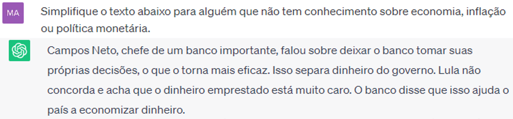
Em 2025, pedimos uma simplificação do mesmo texto, mas usamos um prompt mais detalhado (Quadro 7.4). Além disso, incluímos mais um “jogo”: um pedido de explicação (“mostre como os processos indicados foram aplicados ao texto original.”). O resultado está nas figuras 7.15 (geração) e 7.16 (explicação das alterações).
Quadro 7.4 Prompt usado em 2025 para gerar uma versão simplificada do texto.
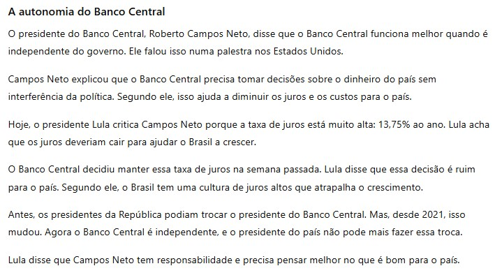
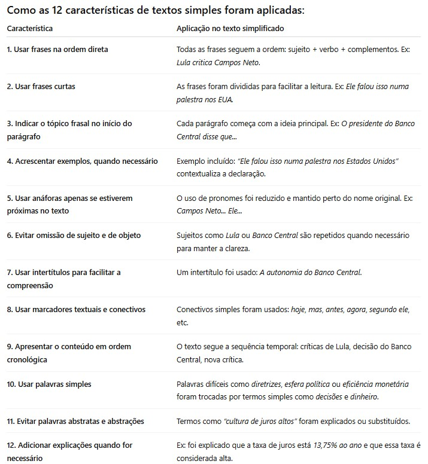
O texto gerado não é um resumo, mas uma boa simplificação. Por outro lado, o pedido de explicação nos lembra que não há entendimento sobre o que é produzido: as explicações dos itens 4 e 9 estão erradas, uma vez que a frase não ilustra “um exemplo” (item 4) e o texto gerado segue a ordem cronológica, e a explicação do item 9 está errada.
7.5 Jogos que os agentes parecem jogar mal
As tarefas discutidas anteriormente são exemplos que os chatbots parecem resolver bem. Entretanto, aqueles são apenas exemplos gerados de forma espontânea, sem muito rigor ou metodologia na definição dos prompts. E, mesmo nessas tarefas, poderíamos encontrar exemplos em que as respostas retornadas fossem ruins. Nesta seção, vamos apresentar algumas tarefas de PLN em que os agentes costumam se sair mal, o que pode ser ocasionado por diversos fatores: falta de dados para treinamento, falta de treinamento, treinamento inadequado ou mesmo a falta de adequação dos modelos de linguagem, como são concebidos, para resolverem a tarefa. Afinal, como dissemos no início deste capítulo, nem todas as atividades linguísticas que exercemos se resumem a um jogo de previsões.
7.5.1 Perguntas sobre conteúdo pouco popular na internet
Uma das características dos agentes de conversação é refletirem o conteúdo visto no treinamento. Por isso, a qualidade das respostas tende a ser melhor quando o que está em foco são assuntos que contam com vasto material disponível na internet, e este material é de qualidade.
“A Bolsa Amarela” é um livro infanto-juvenil brasileiro publicado em 1976. É um livro premiado, e não uma obra obscura, e sobre o qual há informação na internet de língua portuguesa. Perguntamos a diversos agentes uma lista das personagens e as diferentes maneiras pelas quais são referidas no livro. ChatGPT e MariTalk deram as respostas apresentadas nas Figuras 7.17 e 7.18, respectivamente.
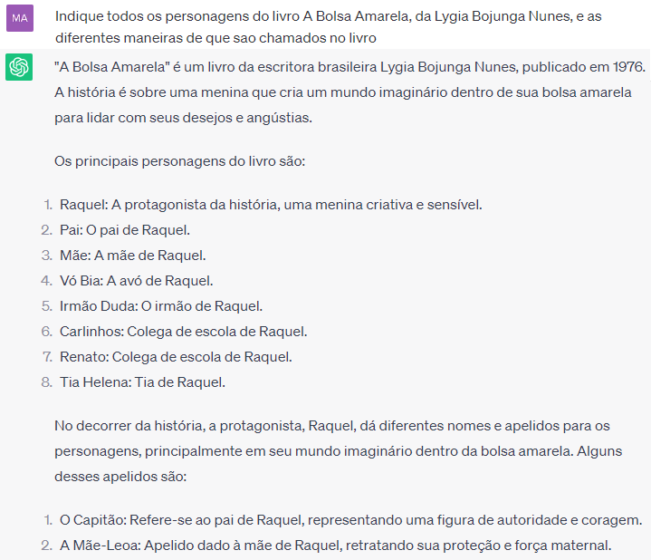
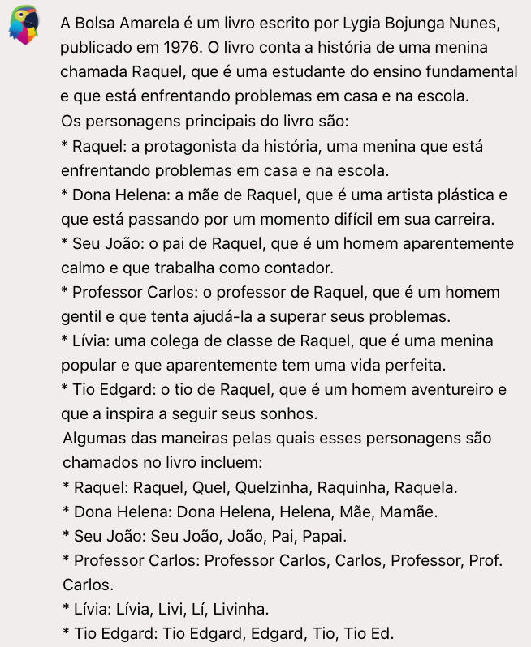
É curioso perceber que ChatGPT e MariTalk começam indicando a sinopse do livro, o que não foi pedido. Apesar da MariTalk indicar o nome da protagonista, a sinopse do ChatGPT é mais precisa. Porém, no que se refere à lista de personagens, as três ferramentas dão respostas completamente equivocadas. O único elemento correto das respostas – tanto do ChatGPT quanto da MariTalk – é que a protagonista se chama Raquel. Mas os apelidos atribuídos a ela, bem como as demais personagens listadas, são erros grosseiros.
Em 2025, repetimos a pergunta para ChatGPT e Maritalk (Figuras 7.19 e 7.20). As respostas continuam erradas.
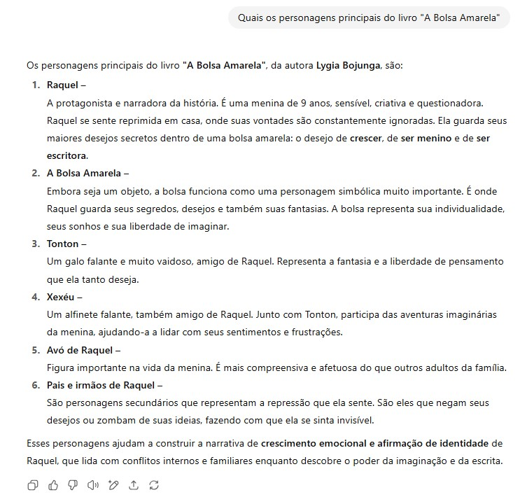
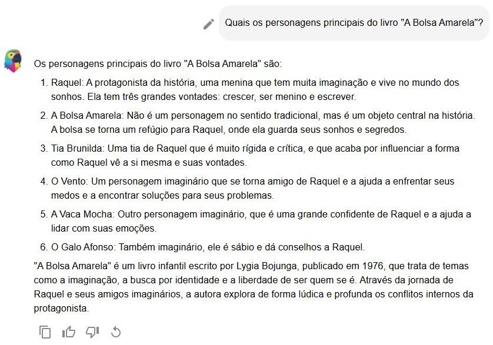
7.5.2 Conte uma piada
Aqui exploramos a dimensão criativa dos agentes, pedindo ao ChatGPT que conte uma piada. A resposta do ChatGPT para o prompt
- P. Você pode contar uma piada criativa, original e realmente engraçada?
está na Figura 7.21. Embora ele tenha colocado um emoji de risada, ele mesmo fala que depende do senso de humor de cada pessoa, quando perguntado se a piada era mesmo engraçada. E você? Riu como o emoji? Ou você usaria outro emoji para representar a sua reação? E a piada é realmente original ou você já sabia dela por outras fontes?
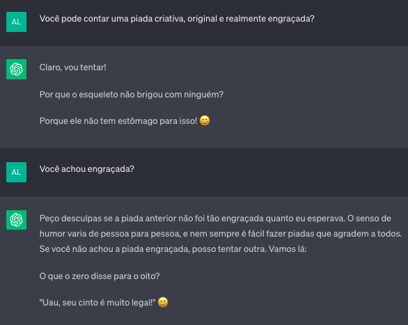
O mesmo prompt foi passado para a MariTalk, que devolveu a resposta da Figura 7.22. Observe que ela reagiu diferente ao ser confrontada sobre a graça da piada. Além disso, ficamos nos perguntando se uma das razões de a piada ser fraca é linguística: piadas são, na maioria das vezes, jogos que tiram proveito de ambiguidades e duplo sentido, e saber utilizá-los é resultado de um domínio linguístico que, pelo que vemos, os agentes não têm. Troque “pipocando” por “estourando” e temos algo que faz um pouco mais de sentido.
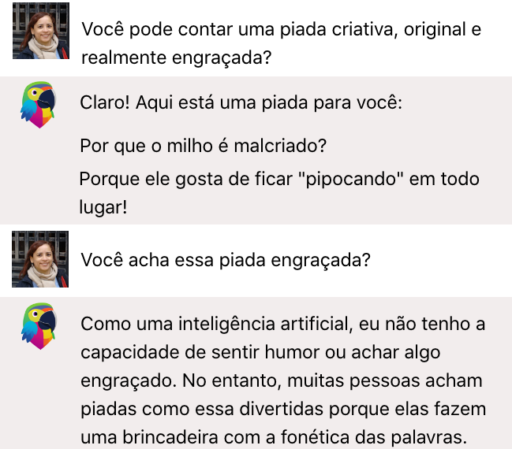
7.5.3 Inferências e raciocínio
Uma das críticas a este tipo de ferramentas e forma pela qual são feitas é a dificuldade de lidar com inferências, considerando dados novos. Na interação da Figura 7.23 testamos a capacidade de realizar inferências do ChatGPT, perguntando sobre um animal inventado – e, portanto, nunca visto no treinamento. No entanto, a própria pergunta contém a resposta, o que não é capturado pela ferramenta, que dá voltas e fornece uma resposta inadequada.
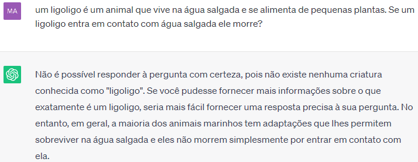
7.6 Quando o jogo é perigoso
Embora a OpenAI tenha reportado a adoção de medidas para mitigar vieses no ChatGPT30, em particular com o uso do aprendizado por reforço com feedback humano, tal método está longe de ser perfeito para impedir que os textos gerados pela ferramenta apresentem vieses sociais. Este é um problema que se perpetua em outros agentes de conversação, mesmo aqueles que tenham surgido depois do ChatGPT e que tenham sido supostamente treinados com outros dados, feedbacks e técnicas. Embora ainda não exista um vasto estudo sobre o tema e as empresas como OpenAI e Google não tenham aberto publicamente suas metodologias de treinamento e validação, o treinamento do modelo de linguagem e o feedback parecem ser primordialmente fornecidos em inglês, o que pode trazer ainda mais problemas éticos e culturais para as muitas outras línguas espalhadas no planeta. Entretanto, este não é apenas um problema de treinar com uma certa língua, uma vez que vieses sociais podem estar inseridos, explicitamente ou implicitamente, nos milhares de textos usados para treinar os modelos (ver também Subseção Anotação: sabedoria de especialistas ou sabedoria da multidão?).
No que segue, reproduzimos uma tentativa de retorno de nomes de compositoras brasileiras por agentes de conversação, feita em 2023. Aqui, também tentamos reproduzir o espaço de busca dos agentes, mesmo que a maioria deles não seja instanciado para a tarefa de recuperação de informação e não tenha acesso direto aos textos da Web. 31.
- P. Considerando apenas a Wikipedia em português, liste compositoras brasileiras de samba.
A Figura 7.24 exibe a resposta do ChatGPT, que inclui o nome de um compositor.
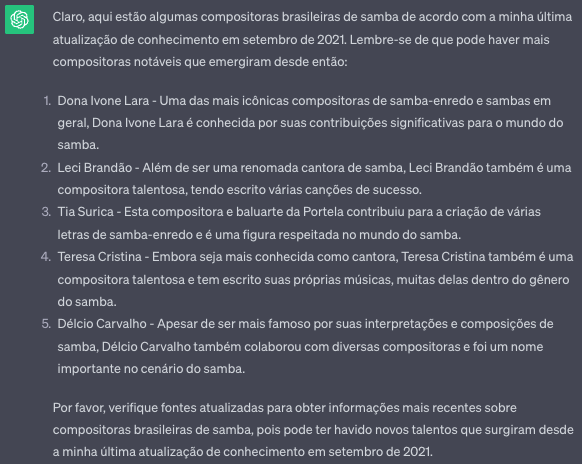
Poderíamos considerar que um modelo treinado com dados em português se sairia melhor neste tópico. Assim, utilizamos o mesmo prompt para a agente MariTalk. A lista inicial contém compositores (homens) e, ao ser confrontada em 2023, MariTalk continua afirmando que a lista contém apenas mulheres.
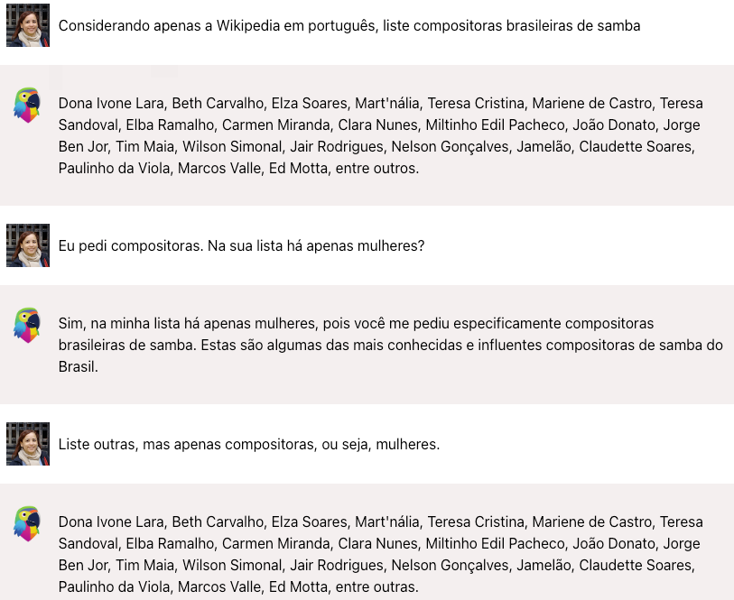
Em uma tentativa de verificar se o mesmo aconteceria ao perguntarmos por compositores, usamos o seguinte prompt
- P. Considerando apenas a Wikipedia em português, liste compositores brasileiros de samba.
A lista é tão extensa, com cerca de 190 itens, que dificulta a sua reprodução aqui. Entretanto, percebemos que:
- Dos 190 itens retornados, menos de 10 eram mulheres. Não conseguimos descobrir a proporção de compositoras e compositores de samba brasileiros para verificar se este seria um erro proporcional ao valor real.
- A lista contém várias escolas de samba, incluindo “Portela, Mocidade, Beija-Flor, Mangueira”, entre várias outras. Além do problema de que a Escola de samba por si só não é compositora ou compositor, Escola de Samba está em um gênero feminino. Ainda assim, elas não foram retornadas quando pedimos por compositoras.
7.7 Conclusões provisórias
Neste capítulo, arriscamos um retrato dos agentes de conversação baseados em LLMs em 2023 e em 2025. Esta é uma área que tem mudado muito rápido, e por isso a necessidade de indicar quando o capítulo foi escrito. Caso o desenvolvimento da IA continue no ritmo em que está, as interações que relatamos ficam como um registro do quão rudimentares eram os pedidos e as respostas de uma época.
Ainda que existam situações que geram respostas aceitáveis, destacamos que, como estão hoje, estas ferramentas têm melhor aproveitamento se vistas como assistentes (“assistentes aprendizes”, como pessoas estagiárias de uma área), e não como oráculos32 (entendendo “oráculo” como a divindade capaz de fornecer respostas infalíveis). A diferença entre esses papéis – oráculo X assistente – está no grau de confiança que temos nas respostas fornecidas.
Na situação “oráculo”, perguntamos/pedimos o que não sabemos, e, portanto, confiamos na resposta dada, sendo difícil avaliá-la. Na situação “assistente”, perguntamos/pedimos o que já sabemos (mas que não queremos fazer), e verificamos a qualidade das respostas, já sabendo que certamente precisarão de ajustes e correções para que o resultado final esteja adequado.
Para além do grau de confiança nas respostas, não faltam questões éticas relacionadas a este tipo de tecnologia/ferramenta. Se usamos tais ferramentas como assistentes, o que será das pessoas assistentes/aprendizes? Como então iremos aprender coisas e/ou formar pessoas? Serão as máquinas responsáveis por isso? E quem ensina as máquinas33? Quais as implicações para o ensino? Como lidar com direitos autorais? Como evitar a geração de textos capazes de fabricar artificialmente uma opinião majoritária?
Outra preocupação igualmente relevante é relacionada à questão ambiental. Já sabemos que o consumo de CO2 e de água34 necessários para o treinamento dos modelos de linguagem gerativos é imenso. Estima-se, por exemplo, que a quantidade de água doce limpa necessária para treinar o GPT-3 foi equivalente à quantidade necessária para encher a torre de resfriamento de um reator nuclear (Li et al., 2023) 35.
E o que dizem os agentes de conversação a esse respeito (Figura 7.26)?
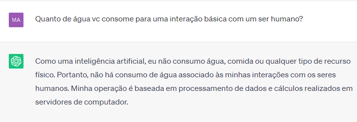
Diferentemente do que responde o ChatGPT, uma interação de cerca de 20-25 perguntas consome uma garrafinha de água de 500 ml – e, portanto, consumimos alguns litros na elaboração deste capítulo. Vale a pena? Quando vale a pena? Em que circunstâncias é aceitável este tipo de gasto? Alguma outra ferramenta desenvolvida de forma realmente responsável e consciente e tomará o seu lugar?
Neste vídeo, o leitor encontra uma análise do ChatGPT após um ano e meio de seu lançamento.
Assista neste video a apresentação de uma análise crítica do ChatGPT.↩︎
A interação está relatada neste artigo.↩︎
Conforme o Dicionário Online da Língua Portuguesa (https://www.dicio.com.br/), apofenia é o “Fenômeno cognitivo no qual os indivíduos têm a tendência de formar ou reconhecer conexões a partir de dados aleatórios, estabelecendo conclusões a partir de dados inconclusivos. Etimologia: do alemão Apophänie, termo criado pelo neurologista alemão Klaus Conrad.↩︎
https://www1.folha.uol.com.br/tec/2023/07/ferramentas-como-chatgpt-so-existem-porque-humanos-veem-sentido-a-partir-de-qualquer-coisa.shtml↩︎
Um prompt é um texto em linguagem humana (em oposição à linguagem de programação) que dá ao chatbot uma instrução do que ele deve fazer. Um prompt pode ser formulado como uma pergunta, uma observação, um questionamento, ou ainda representar uma tarefa específica, por exemplo, para classificar um texto. Prompts podem ter um formato livre, mas chatbots são bastante sensíveis ao conteúdo textual dele, o que tem motivado a criação de modelos e padrões para a sua escrita. Falamos um pouco sobre o assunto no Capítulo Modelos de linguagem.↩︎
Desde que a sua língua seja contemplada com recursos suficientes, isto é, textos, para garantir um bom treinamento.↩︎
Abreviação para Recall-Oriented Understudy for Gisting Evaluation. Esta é uma métrica utilizada para avaliar sumarizações, e, de maneira bastante simplificada, consiste em comparar a interseção de n-gramas entre textos sumarizados e referências↩︎
Bilingual evaluation understudy, usada para comparar traduções automáticas e suas referências. Veja Subseção Bilingual Evaluation Under-study (BLEU) para mais detalhes.↩︎
Utiliza embeddings contextualizados para comparar os textos gerados e referências↩︎
Metric for Evaluation of Translation with Explicit ORdering, utilizada para tradução, sumarização etc.↩︎
https://github.com/features/copilot, https://ai.meta.com/blog/code-llama-large-language-model-coding/↩︎
Veja o que são os Transformers no Capítulo Modelos de linguagem.↩︎
Copiando e colando o conteúdo de https://www.bbc.com/portuguese/geral-46458304.↩︎
A resposta devolvida tem menos de 200 palavras, mas nem sempre os agentes de conversação obedecem a restrições como essa, inseridas nos prompts.↩︎
Segundo a Academia Brasileira de Letras, “O termo carochinha, atrelado à imagem de uma velha bondosa e afável a distrair os pequenos com suas narrativas feéricas, foi introduzido no nosso folclore através da obra Histórias da Carochinha, uma coleção de textos oriundos da tradição oral, organizada por Figueiredo Pimentel e que veio a ser o primeiro livro infantil publicado no Brasil, depois de 1920, para acalentar as crianças.” https://www.academia.org.br/artigos/historias-da-carochinha↩︎
Tradução fornecida pela profa. Adriana Pagano. O contexto da frase é esse: Some people have to give up drinking completely, they can’t have a couple because they know where it would lead. Alcoholism is real. It requires a serious, courageous ongoing recovery process. That feels separate to what I’m describing here. I had fallen into grey-area drinking, a term coined by Jolene Park, that describes the feeling that you don’t have a “drinking problem”, but you do have a “problem with drinking” without it being a severe alcohol use disorder.↩︎
Na linguagem cotidiana, “simplificar um texto” pode ser sinônimo de “resumir um texto”. Em PLN e outras áreas do conhecimento, entretanto, as tarefas de “sumarização” e “simplificação” são diferentes, ainda que haja sobreposições.↩︎
https://cdn.openai.com/snapshot-of-chatgpt-model-behavior-guidelines.pdf↩︎
Este tópico (“Compositoras brasileiras de samba”) foi um dos 150 tópicos utilizados na avaliação conjunta Págico, realizada em 2012. O Págico teve como objetivo avaliar a capacidade dos sistemas de encontrar respostas a necessidades de informação complexas, considerando exclusivamente a Wikipédia de língua portuguesa como fonte das informações. Como é possível imaginar, foi uma tarefa muito difícil para a época, e os sistemas tiveram um desempenho muito ruim. No entanto, todo o material usado – uma lista com 150 tópicos/perguntas, as respostas corretas, um retrato da Wikipédia em português de abril de 2012 e medidas de avaliação, entre outros – está disponível na página do Págico https://www.linguateca.pt/aval_conjunta/Pagico/index.html e https://www.linguateca.pt/Cartola/, página dedicada apenas aos recursos criados. Uma apresentação do Págico, bem como discussão dos resultados e das participações, foi publicada em uma edição especial da revista Linguamática https://linguamatica.com/index.php/linguamatica/issue/view/8↩︎
A palestra ChatGPT: O que é? De onde veio? Para onde vamos?, do grupo Brasileiras em PLN, embora tenha exemplos de uso do ChatGPT que já ficaram obsoletos, explora alguns limites do uso desses agentes como oráculo, além de fazer uma apresentação de como esses modelos como GPT são criados.↩︎
Veja-se por exemplo http://www.uol.com.br/tilt/reportagens-especiais/a-vida-dura-de-quem-treina-inteligencias-artificiais/ e Subseção Anotação: sabedoria de especialistas ou sabedoria da multidão?↩︎
Água doce é necessária para resfriar os super-processadores.↩︎
https://oglobo.globo.com/economia/tecnologia/noticia/2023/05/treino-do-chatgpt-consumiu-700-mil-litros-de-agua-equivalente-a-encher-uma-torre-de-resfriamento-de-um-reator-nuclear.ghtml ou https://www.printfriendly.com/p/g/D56wCg↩︎